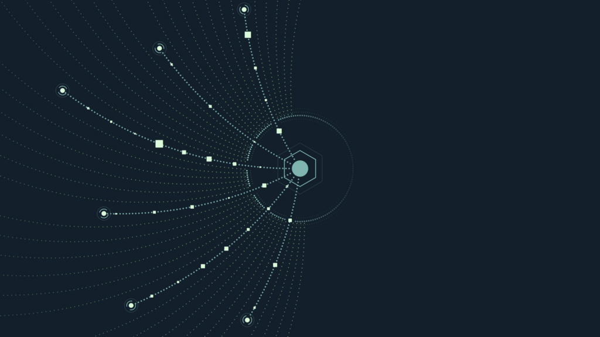

01 · KR
질병관리청 건강도우미 챗봇
국가 데이터를 또래 비교와 생활습관 안내로 바꾸다
질병관리청은 20년간 축적된 500만 건 이상의 지역사회건강조사 자료를 기반으로 건강도우미 챗봇을 개방했다. 이용자는 또래와 건강 상태를 비교하고 만성질환 위험도·생활습관 정보를 대화로 확인할 수 있다.
원문 보기 ↗ADDIT INSIGHT
공공 AI는 데이터 규모보다 개인이 다음 행동을 정할 수 있는 비교 기준과 설명 구조가 중요하다.
두 뉴스 다이제스트의 중복을 걷어내고, 개인정보 연결·보안 전용 모델·에이전트 실행 기반·로컬 AI·전문 업무 평가를 하나의 운영 원칙으로 묶었습니다.
두 원문을 합쳐 중복은 덜고, 바로 적용할 운영 기준을 남겼습니다.
AI가 메일·일정·건강정보를 읽을수록 접근 범위와 사용 목적을 먼저 정해야 한다.
보안 특화 모델은 모델 이름보다 초기 사용자·인증·기록·책임 범위를 확인해야 한다.
에이전트 운영의 공통 기반은 모델이 아니라 도구 권한과 실행 로그를 묶는 harness다.
로컬 AI는 데이터 이동·API 비용·기기 성능의 균형을 다시 설계하게 한다.
전문 업무의 자동화 평가는 정답률보다 누락 발견과 최종 검수 가능성을 봐야 한다.
국가 데이터를 또래 비교와 생활습관 안내로 바꾸다
질병관리청은 20년간 축적된 500만 건 이상의 지역사회건강조사 자료를 기반으로 건강도우미 챗봇을 개방했다. 이용자는 또래와 건강 상태를 비교하고 만성질환 위험도·생활습관 정보를 대화로 확인할 수 있다.
원문 보기 ↗공공 AI는 데이터 규모보다 개인이 다음 행동을 정할 수 있는 비교 기준과 설명 구조가 중요하다.

고위험 보안 업무는 성능과 접근 통제를 함께 공개하다
Google DeepMind는 장기 작업과 사이버 방어를 겨냥한 Gemini 4 Carbon을 발표하고 초기에는 일부 보안 전문가부터 제공한다고 밝혔다. 일반 개발자·기업·소비자 대상 공개 일정은 아직 정해지지 않은 제한 제공 단계다.
원문 보기 ↗고성능 모델의 출시일보다 누가 어떤 인증·기록·사용 목적 아래 쓰는지가 도입 판단의 핵심이다.

모델보다 실행 기반을 공통화해 멀티모델을 운영하다
Microsoft는 여러 모델에 작업 지시, 자료, 도구 호출과 실행 통제를 연결하는 Copilot harness를 개발자·기업에 제공한다고 발표했다. Copilot Code·Studio·GitHub Copilot 앱과 명령줄 도구 등에 공통 실행 기반을 적용하는 구조다.
원문 보기 ↗기업 에이전트의 표준화 대상은 모델 하나가 아니라 권한·도구·실행 기록을 묶는 harness다.

브라우저 안에서 로컬 모델을 선택형으로 실행하다
Opera는 Opera One·GX·Neon에서 웹사이트와 확장 프로그램이 이용자 기기의 로컬 AI를 호출하는 WebAI 초기 프리뷰를 공개했다. Prompt·Decision·Semantic Embeddings API를 제공하며, 사용자가 설정에서 켜기 전에는 모델이 내려받아지지 않는다.
원문 보기 ↗로컬 AI의 장점은 무료가 아니라 데이터 이동·API 비용·운영 책임의 위치를 다시 고를 수 있다는 점이다.

전문 업무는 정답률보다 누락·판단·완결성을 평가하다
Surge AI는 50개 환경과 1,789개 파일로 세무 에이전트의 전문 업무를 평가하는 DAYJOB: Tax를 공개했다. Claude Sonnet 5.5의 발표 기준 pass@1은 10.8%이며, 통과는 채점 기준의 95% 이상을 충족해야 한다.
원문 보기 ↗전문 업무 자동화는 계산 정확도만 보지 말고 중요한 문제를 발견하고 끝까지 완결하는지 측정해야 한다.